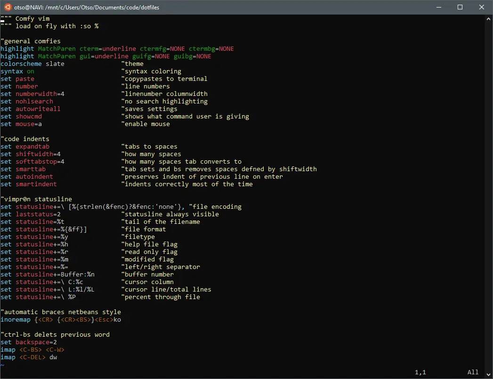

Emacs vs. Vim vs. programming

I know my way around both Vim and Emacs. They are immensely powerful and extensible miracles of universe, which can be tweaked and extended any way imaginable and work with just about any language. But there are two problems with both of them.
First of all, they have horrible defaults when comparing to those found in more modern editors such as Sublime and Kate. This gives users the first initiative to start discovering ways to add things that come granted elsewhere such as smart intendation, automatic bracing, line numbers, highlighting and autocomplete.
Secondly, since neither Emacs nor Vim are based on IBM CUA standards rest of the world more or less follows, any user seeking to make use of those editors need to learn everything from basics. How to copy, how to paste, how to cut, how to move around, how to save, how to open - and in case of Vim - how to even start writing something. Everything must be learned from the scratch. Hell, they even ship with extensive tutorials that take longer to complete than your average Call of Duty single player campaign! Upon finishing those tutorials, you are about as productive as you would be in a modern editor within minutes, but still lack all the niceties they ship with by default.
Thus when user tries to actually get things done, much of the time is spent searching around on how to do something with the editor. In fact I'd bet most of the time. Instead of writing code or learning to program, user is now spending more time learning the editor. This is the part where their power and extensibility starts turning aganst themselves. User may start a never-ending quest to become as efficient with the editor as possible. Actually programming becomes now a secondary thing. Don't believe me? Just take a look at VimGolf, where users compete with who can accomplish some menial task with as little keystrokes as possible.
This kind of thinking about editors starts to impact cognitive workload. Instead of focusing on actual problem to solve, user now focuses on a problem of expressing something with the editor. How do I jump there easily? How do I indent only these lines? What was the trick to do this again? Instead of reading language documentation, user spends time reading editor documentation. Yeah, this has happened to me.
Vim as a moded editor also has a habit of really messing with the flow, sometimes really bad. This has happened to me way more often than is necessary: I get into something and code away, then hit Esc to do some line editing, forget to switch back to insert mode, and accidentally type a string of commands because my brain thinks it switches over by itself from command mode. Of course it doesn't! Suddenly whole lines of code are missing, cursor has jumped to some mysterious place and I'm flabbergasted as to what the hell just happened. Then take some time to see if I can revert damage or would it be just safer to resume from autosave. Obviously, these kind of nasty wrong mode mishaps can be avoided with time and pure muscle memory, but those would never happen in a single-mode editor.
Emacs is modeless, so it doesn't break the flow like Vim does. The only real problem with Emacs is really the awkward defaults, somewhat counter-intuitive terminology and non-CUA key combos. Of the two editors, I have grown to like Emacs a lot more simply because it doesn't break the flow like Vim does. And after learning some basic Lisp the editor suddenly becomes both very accessible and crazy configurable, far beyond any other editor. Package manager in text editor for extending editor with community addons without ever leaving editor? Sure thing, buddy!
I still think that learning basic Vim is essential skill. Some implementation of vi ships by default in every Linux and Unix I know of, so you know if you ssh into something you can at least use vi instead of ed. Speaking of remote system management, anything else than vi is painful over poor connections to get anything done. It is also a required skill for working with git on command line, which by default uses vimdiff for merging. Emacs in my opinion is perfectly optional to master, unless you really want to learn some Lisp for great fun, where Emacs is the environment to work in, thanks to Emacs itself being practically a Lisp Machine of yore. Basics of both are easy to master in one evening, but then it's simply the matter of keeping the perfectionist in all of us in check. My .emacs has 144 lines of configuration including comments, and it certainly isn't getting any smaller as time progresses.